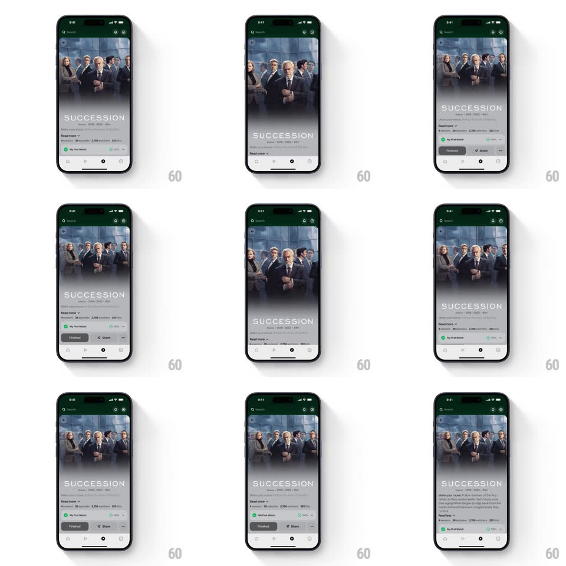

Media
Frame-by-frame

Rebuild this interaction 1:1: Marathon's show page header - over-scrolling the top stretches the Succession banner image elastically beyond its frame while the page content stays pinned; and tapping "Read more" expands the synopsis inline, the text block growing open with a smooth height animation as the chevron flips.

Rebuild this interaction 1:1: Marathon's show page header - over-scrolling the top stretches the Succession banner image elastically beyond its frame while the page content stays pinned; and tapping "Read more" expands the synopsis inline, the text block growing open with a smooth height animation as the chevron flips.
## Integration
Integration: stack-agnostic spec - springs given as stiffness/damping, timed motions as duration + curve; map every value to your framework and animation library of choice.
## Scene
Dark show page: full-bleed series banner (cast photo) under the nav bar, "SUCCESSION" in spaced capitals, metadata line, "Read more" synopsis toggle, watch-status row (Finished pill, Share), tab bar at the bottom.
## Motion spec
Pattern: elastic header stretch + inline text expansion.
- Over-scroll at the top: the banner scales up from its top edge (scale 1 -> 1.15 max, rubber-banded with 0.5 resistance) and the title block parallaxes down at 0.4x scroll speed; release snaps back (spring ~300/24, 400ms).
- Normal scroll: the banner collapses under the nav bar with a soft fade of its top edge.
- Tap "Read more": the synopsis expands from two lines to full text (height animation, 350ms ease-in-out), the chevron rotates 180deg (250ms), and the content below pushes down with it; tap again to collapse on the same curve.
- The banner gradient scrim darkens proportionally as it stretches, keeping the title legible.
## Calibration
- The stretch is rubber-banded - resistance increases with distance, so it never feels infinite.
- The expand animates real height - content below slides, never jumps.
## Reduced motion
No rubber-band stretch (header pins); text expands with a 250ms fade.
## Don't miss
- The title's wide letter-spacing ("S U C C E S S I O N") is part of the brand - keep the tracking.
- The scrim follows the stretch, not the scroll - it is tied to the scale value.